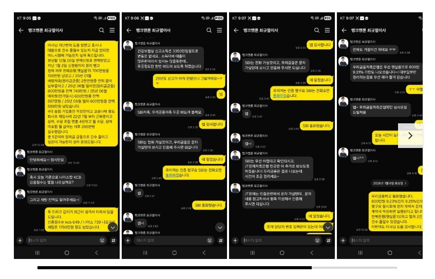

[회생면책자대출 ] 기대출 매우 과다 대출승인. (연소득3천만 기대출 5건에 4700만) 최규열이사님 최고!!~~ 감사합니다~

지루하고 지루했던 5년간의 개인회생 주로 대부분 3년이었을텐데
저는 5년동안 변제금 납부하느라 지루했었습니다.
중간중간 고비때마다 최규열이사님 도움으로 넘기면서 드디어 지난 12월 5일 마지막 변제금을
납부하고 면책 신청을 했고 이번달 18일에 면책결정이 났고 정확히 2주뒤 신정원 도달해서
신용점수가 좀 오르긴 했지만 회생중 대출이 있었어서 그리 크게 오르진 않은 상태
kcb 649/나이스739점 이었네요
게다가 기대출이 엄청난 상태 햇살론15 700만 / 저축 2천만 / 대부3건 각각 800만, 600만, 600만원이 있는
상황이라 연체는 없었고 최초 받은건 보다는 금액들이 조금씩은 줄었지만 햇살론15를 제외하고는
작년 25년에 최규열이사님이 진행해 주신거라 기간도 그리 길지 않았던터라 큰기대 없이 혹시나 싶은
마음에 일부 대환해서 건수라 줄여보고자 다시 한번 최규열이사님께 도움을 요청했습니다.
좋지 않은 상황에서도 여기 저기 알아봐 주시고 부결도 2곳 있었고 대부쪽으로 알아보기 전에 저축한곳
알아보신다고 하셨는데 바로 우리저축 햇살론으로 가승인 800만원!!~~ㅋ
4시쯤 우리저축과 통화는 하였지만 늦은 시간이라 다음날 심사 통화하기로 하고 일단 마무리~~
다음날 오전 심사 통화고 전자 계약후 800만원(9.31%) 승인 후 입금까지 완료 되었습니다.
저는 회생을 한번 중도 실패하고 재회생으로 면책을 받았습니다.
그래서 재회생중 대출에 걸림돌이 많았는데 최규열이사님이 늘 제 숨통을 트이게 해주셨습니다.
여기 저기 다른곳에 많이 이용을 해봐도 조회만 하고 실패 나는 경우 많았었는데 뱅크앤론 특히 최규열이사님은
최고시고 제 걱정을 덜어주시네요~
사람이 살면서 빚은 지면 안되는데 살다보니 쉽진 않습니다.
이젠 정말 관리 잘해야 겠습니다.
카페에 들르시는 모든 분들도 늘 행복하시고 26년에는 모든 일들 잘 풀리시고 행복한 한해 되십시요.
관리 잘해서 다음엔 다시 대환으로 최규열이사님께 부탁좀 드려야 겠습니다.
https://cafe.naver.com/cityman88/309885